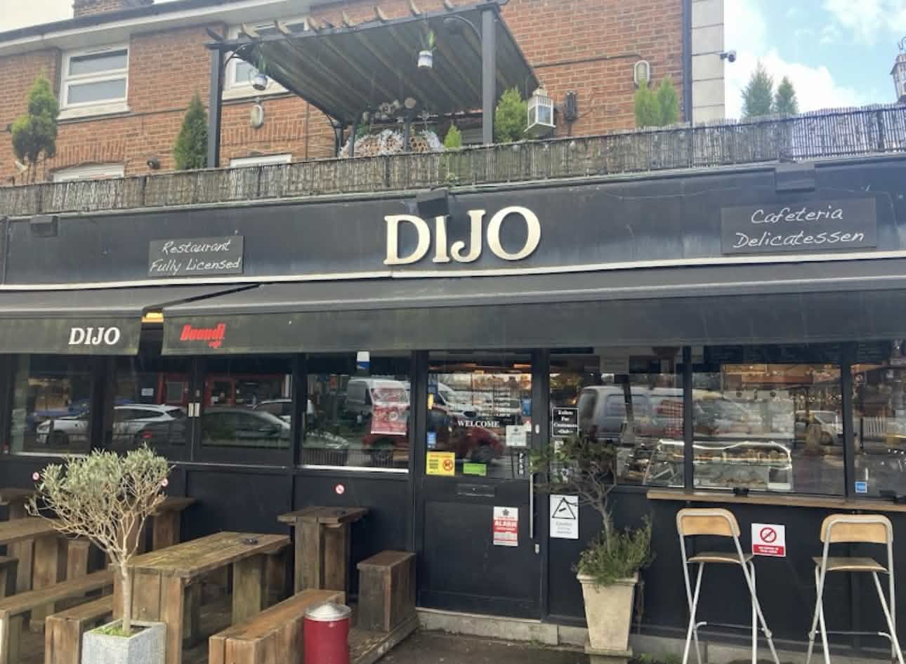
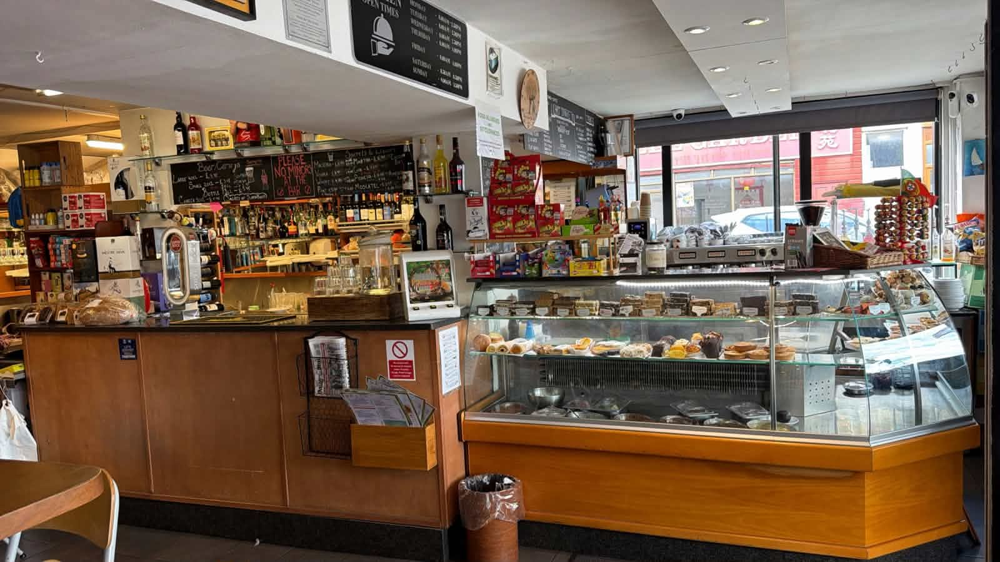
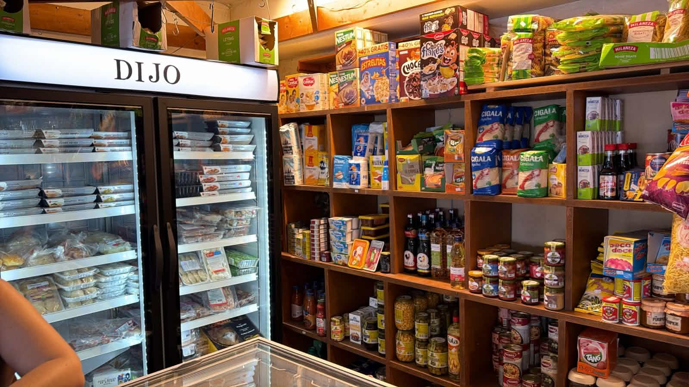
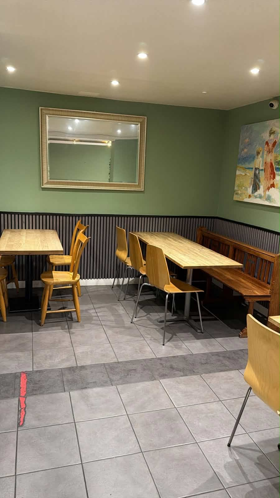
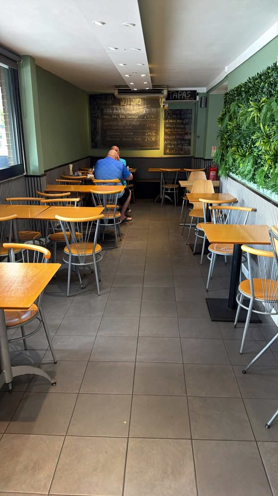
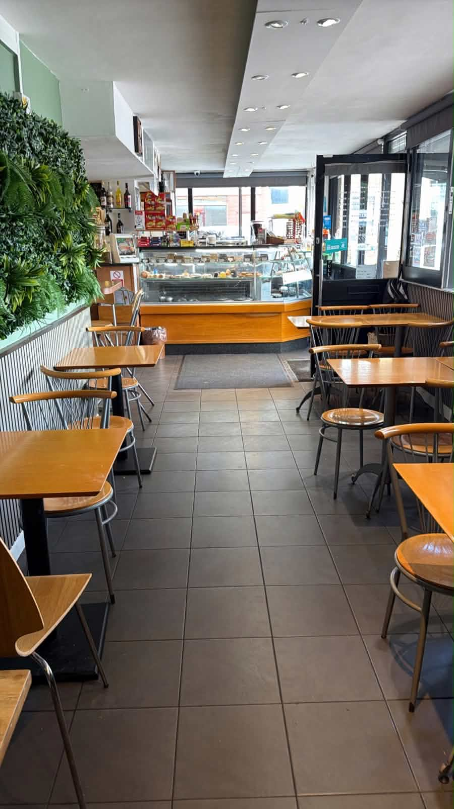

★★★★★
"Great food and great service. Been for lunch and breakfast recently with my family — always top class! This place is quality and welcoming all at the same time!"
GooglePortuguese Café & Delicatessen
Freshly made food, exceptional coffee and a warm welcome — every single day






Follow us on Instagram @dijocafe for daily updates, specials and behind the scenes
"Great food and great service. Been for lunch and breakfast recently with my family — always top class! This place is quality and welcoming all at the same time!"
Google"The best place to eat in Horley by a mile! All the staff are lovely, everything is authentic. The portions are huge and incredibly flavourful. Top of my list of recommendations in Horley."
TripAdvisor"I would give 6 stars if I could. Lovely staff, delicious food and the best coffee in town. Very friendly little place."
TripAdvisor"You feel like you are on holiday in a cafe in Portugal. The food is good and very well priced. Lovely environment, usually bustling with locals having a great time."
Google"A lovely Anglo Mediterranean cafe with a chill out atmosphere. Food is fresh, delicious and varied. Friendly and discreet staff. Good portions and reasonably priced. 10 out of 10!"
TripAdvisor| Monday | 07:30 – 15:00 |
|---|---|
| Tuesday | 07:30 – 15:00 |
| Wednesday | 07:30 – 15:00 |
| Thursday | 07:30 – 17:00 |
| Friday | 07:30 – 17:00 |
| Saturday | 08:30 – 21:00 |
| Sunday | 09:00 – 16:00 |
Last food orders 30 minutes before closing
34 Station Road, Horley, RH6 9HL